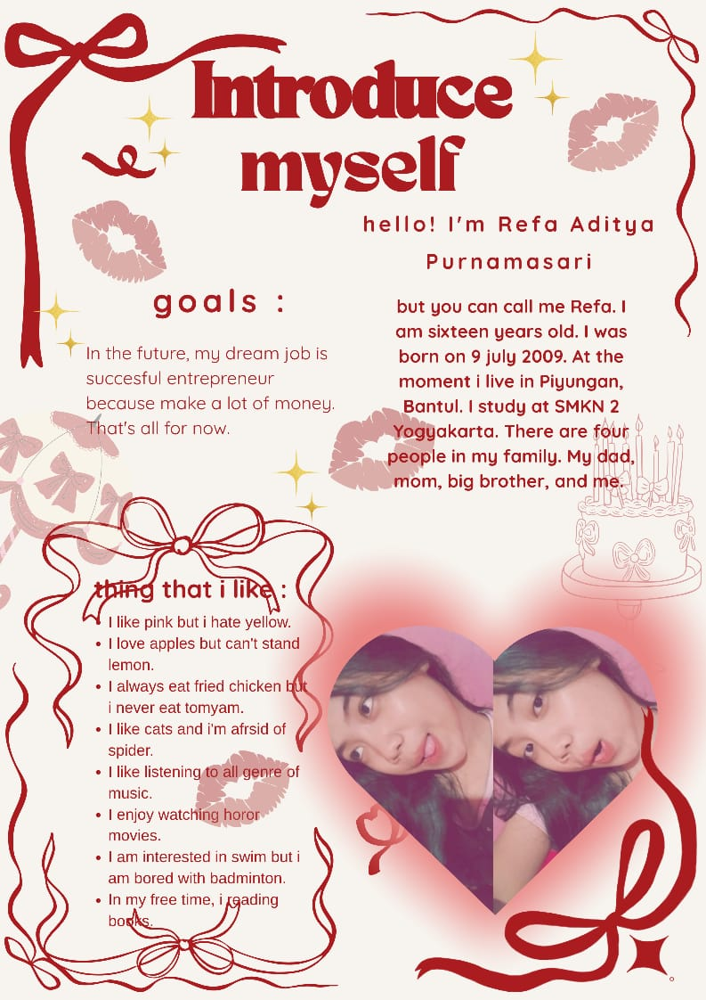

| ✮⋆˙ 🏠︎✮⋆˙ Beranda | ༉‧₊˚.👤༉‧₊˚. Profil | ✎ᝰ. Artikel | ˖°[ ◉¯]˖° Album | ⋆🗒˚˖° Buku Tamu |
|  | Selamat datang𓇼 ⋆.˚ 𓆉 𓆝 𓆡⋆.˚ 𓇼Selamat datang teman-teman di personal web aku,Aku senang teman-teman berkunjung di personal web aku.Website ini masih sangat sederhana karena ini murni html dan aku juga masih belajar membuat website. Website ini aku buat sebagai ruang kecil untuk menyimpan jejak-jejak perjalanan hidupku bersama orang yang aku sayangi. Aku bukan orang dengan banyak pencapaian, tapi aku percaya setiap langkah, sekecil apa pun, punya cerita yang layak untuk dikenang dan dibagikan. Terima kasih udah mampir, semoga kamu betah di sini. •ᴗ• Personal web ini terdiri dari lima menu utama, yaitu:
Halaman profil berisi tentang informasi pribadiku. Halaman artikel berisi tentang artikel-artikel yang berkaitan dengan hobiku,artikel ini aku cari dari internet tetapi ada beberapa pendapatku yang aku tulis pada halaman artikel ini. Halaman album berisi beberapa foto yang aku abadikan bersama teman dan keluargaku. Halaman buku tamu ini bertujuan untuk mengevaluasi website aku ke depannya.Namun karena aku belum belajar web dinamis, maka halaman buku tamu ini hanya sebagai tampilan saja. |
|||